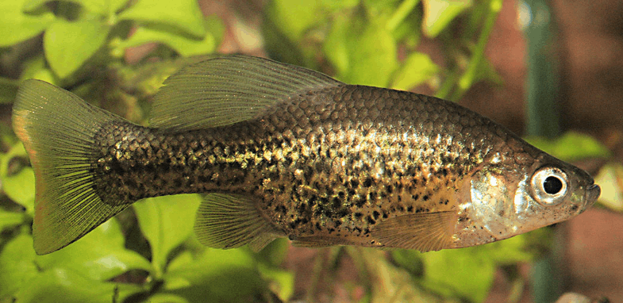

Systématique
- Ordre : Cyprinodontiformes
- Famille : Goodeidae
- Genre : Chapalichthys
- Espèce : C. pardalis
- Auteur : Alvarez, 1963

Chapalichthys pardalis est un membre robuste et de taille moyenne de la famille des Goodeidae. Originaire de zones isolées du Mexique, il se distingue de ses proches parents par son patron mélanique très marqué, constitué de grandes taches sombres et irrégulières sur un fond beige à argenté, évoquant la robe d'un félin.
Les femelles sont imposantes, pouvant atteindre 8 à 10 cm de longueur totale, tandis que les mâles sont plus petits, plafonnant généralement autour de 6 à 7 cm. Le corps est comprimé latéralement, haut et puissant. Les nageoires impaires, particulièrement la dorsale et la caudale, sont larges. Chez le mâle, la nageoire caudale est bordée d'un liseré jaune-orangé vif très distinctif, doublé d'une bande noire subterminale.
Cette espèce est considérée comme "En danger critique" (CR) par l'UICN. Sa distribution sauvage est extrêmement restreinte et subit les conséquences de la déforestation, de l'agriculture intensive et de l'introduction d'espèces invasives. Sa survie repose aujourd'hui largement sur les programmes de conservation en captivité gérés par des aquariophiles spécialisés.
Chapalichthys pardalis est un poisson dynamique et très bon nageur. Bien que moins agressif que certains autres Goodeidae de grande taille, il possède un caractère bien trempé. Il est préférable de le maintenir en groupe pour diluer les interactions sociales et permettre l'établissement d'une hiérarchie naturelle.
C'est un poisson curieux qui explore activement son environnement. En aquarium, il apprécie les espaces de nage dégagés au centre, tout en ayant besoin d'une périphérie densément plantée pour se reposer ou pour que les femelles puissent s'isoler. Il peut se montrer brusque lors de la distribution de nourriture, dominant souvent les espèces plus timides.
Mode : Vivipare matrotrophe.
Comme les autres Goodeinae, le développement embryonnaire est interne. Les embryons sont reliés à la mère par des trophotaeniae qui assurent le transfert nutritif. Le mâle utilise son andropodium pour la fécondation. La gestation est longue, variant de 55 à 65 jours selon les conditions thermiques.
Les portées sont proportionnelles à la taille de la femelle, allant de 15 à 40 alevins. Les petits naissent à un stade très avancé, mesurant souvent plus de 1,5 cm. Ils sont immédiatement capables de se nourrir de proies de petite taille. Bien que les adultes soient globalement tolérants envers les jeunes, une végétation dense (mousses, plantes flottantes) est recommandée pour garantir un taux de survie optimal en bac d'ensemble.
Dimorphisme sexuel : Le mâle possède un andropodium (encoche caractéristique sur la nageoire anale). Il est plus petit et arbore des couleurs plus contrastées, notamment sur les nageoires. La femelle est nettement plus grande, plus massive, avec une zone abdominale très développée lors de la gestation.
Espérance de vie : 3 à 5 ans en aquarium.
L'espèce est endémique de la région de Tocumbo dans l'État de Michoacán, au Mexique. Elle fréquente principalement des sources (ojos de agua) et des canaux à courant lent. Ces eaux sont généralement claires, alcalines et riches en végétation aquatique submergée.
La température de l'eau dans ces sources est relativement stable mais peut subir des variations saisonnières. Le substrat est composé de roches, de graviers et de dépôts organiques. Les algues filamenteuses y sont souvent abondantes, offrant une source de nourriture complémentaire et des cachettes.
Répartition

Origine naturelle :
- Mexique : Endémique de l'État de Michoacán (région de Tocumbo).
- Limité à quelques systèmes de sources et canaux isolés.
- Distribution extrêmement restreinte et fragmentée.
Sa survie dans la nature est très incertaine. De nombreux sites historiques ont été modifiés pour l'irrigation ou pollués par les pesticides issus des plantations d'avocatiers environnantes.
Paramètres de maintenance
Température : 20 à 24 °C. Supporte des baisses ponctuelles à 18 °C mais craint les chaleurs prolongées au-dessus de 27 °C.
pH : 7,0 à 8,0.
GH : 10 à 20 °dGH.
Courant : Faible à modéré.
Volume conseillé : Minimum 120 L pour un groupe, compte tenu de la taille des femelles et de la vivacité de l'espèce.
Régime alimentaire
Régime : Omnivore opportuniste.
En aquarium, il accepte volontiers les aliments secs, mais pour maintenir sa vigueur et ses couleurs, une alimentation variée est nécessaire : congelé (artémias, vers de vase) et surtout une part végétale importante (épinards, spiruline, algues).
Il passe une grande partie de son temps à brouter les algues sur le décor, un comportement essentiel à son bien-être.